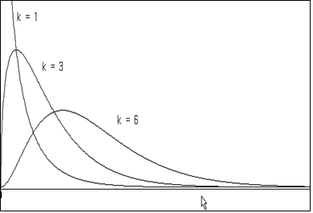
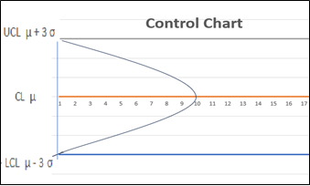

6장 표본 통계량의 분포와 추정
🎲 🎴 ♥ ♦ ♣ ♠
[6장 pdf]
현대통계학의 힘은 적은 수의 표본을 가지고 아주 큰 모집단의 특성을 예측할 수 있는 데 있다. 이 장에서는
- 간단한 표본추출방법인 단순임의추출법과 기타 많이 이용되는 표본추출법
- 모든 가능한 표본평균들의 분포
- 모든 가능한 표본분산들의 분포
- 모든 가능한 표본비율의 분포
를 살펴보고 이를 바탕으로 모집단의 평균, 분산, 비율을 추정하는 방법을 설명한다.
그리고 표본크기의 결정 방법을 설명한다.
표본 통계량 분포의 응용으로 품질관리도에 대해서도 설명한다.
6.1 표본의 추출
통계조사의 대상이 되는 집단, 즉, 모집단은 일반적으로 아주 크다. 그러므로, 전체 모집단을 모두 조사하는 것은
엄청난 비용과 시간을 필요로 한다. 그래서 모집단에서 일부를 추출한 표본을 이용하여 전체 모집단의 속성을
예측하는 것을 추측통계(inferential statistics)라 한다. 그러나 모집단의 조사결과와 표본의
조사결과는 차이가 있기 마련이다. 이러한 차이를 줄이기 위해 표본의 여러 가지 추출 방법이 연구되어 왔는데,
이 중 많이 사용되는 추출법은 모집단의 모든 원소가 표본으로 뽑힐 확률이 같은 단순임의추출법
(simple random sampling)이다. 단순확률추출법이라 부르기도한다.
☞ 단순임의추출법(Simple Random Sampling)
모집단의 모든 원소가 표본으로 뽑힐 확률이 같도록 표본을 추출하는 방법
단순임의 표본추출 시 한번 추출한 원소를 다시 모집단에 포함시키는
복원추출(with replacement )이나,
추출된 원소를 다시 모집단에 넣지 않는
비복원추출(without replacement) 모두 가능하나 실제 거의
모든 표본추출은 비복원추출로 이루어진다.
표본추출시 모집단의 각 원소가 표본으로 뽑힐 확률이 같도록 하려면 어떠한 수단이 필요한데 대개
난수표(random number table)를 많이 사용한다. 난수표란, 0에서 9까지의 숫자를 특별한 규칙성이나
편중성이 없이 흩어 놓은 표이다. 최근에는 컴퓨터로 [0, 1] 균등분포를 이용한 난수 생성을 활용한다.
『eStatU』를 이용하여 단순임위추출을 위한 난수를 생성하여보자.
🎲 예 6.1
어느 학급의 학생수가 50명이다. 이 중에서 3명의 학생을 비복원으로 단순임의 추출하고자 한다. 『eStatU』를 이용하여 추출하여 보자.
풀이
『eStatU』 주메뉴에서 ‘확률난수 생성’을 선택하면 [그림 6.1]의 확률난수 생성창이 나타난다. 여기서 ‘균등분포 정수형 (비복원추출)’을 선택하고 균등분포의 범위를 [1, 50], 자료수 n = 3을 입력한 후 [실행] 버튼을 누르면 그림과 같이 세 개의 난수가 생성된다.
[Random Number Generation]
[그림 6.1] 『eStatU』의 확률난수 생성
6.1.1 표본조사
단순확률추출에 의한 표본 추출은 한 모집단에 대한 모든 표본조사의 기본적인 추출 방법이다. 모집단의 특성에 대해 일부 표본을
이용하여 추정하게 되면 표본을 이용한 추정값과 모집단의 특성값과의 차이가 발생하는데 이를
표본오차(sampling error)라
부른다. 이러한 표본오차를 줄이기 위해 많은 방법이 연구되었다.
분석대상인 모집단의 각 원소를 기본단위(elementary unit) 또는 조사에서 실제 관찰되는 대상이므로 관찰단위
(observational unit)라 한다. 추출방법에 따라서는 이 기본단위들을 개별적으로 추출할 수도 있고(예:단순확률추출),
또는 추출의 편리함을 위해 기본단위들의 집합을 추출할 수도 있다. 그러므로, 표본을 구성하기 위해 추출되는 것을 관찰단위와
구분하여 추출단위(sampling unit)라 부른다. 추출단위별로 표본을 추출하기 위해서는 추출단위들의 표가 필요한데
이를 추출틀(sampling frame)이라 한다. 그리고 이 추출틀을 사용하여 표본을 어떻게 추출할 것인지를 정하는 것을
표본설계(sampling design)라 한다.
좋은 표본조사를 하기 위해서는 각 조사에서 위의 용어들에 해당되는 것들을 사전에 정확하게 정의할 필요가 있다. 그리고 표본조사 역시 과학적 연구의 한 방법이므로 사전에 모든 단계가 계획되고 그 계획에 따라 진행되어야 한다.
표본조사의 주요단계
단계 1. 조사의 목적을 명확하게 설정하여야 한다. 이는 복잡한 조사의 세세한 과정을 계획하고 수행하는 중에도 항상 조사의 목적과 일치하는 결정을 할 수 있도록 도와준다.
단계 2. 조사와 관련된 일반적인 사항들을 점검한다. 예를 들어, 같거나 비슷한 조사가 과거에 수행되지 않았는지, 또는 표본조사가 적합한지에 대해 알아보고, 사용가능한 총비용을 조사하고 요구되는 결과치의 신뢰도와 정확도를 정한다.
단계 3. 제일 중요한 표본설계를 한다. 여기서는 추출단위, 표본의 크기, 추출방법 등을 정하고 각 단계에서 소요되는 비용을 산출한다.
단계 4. 조사의 실제 실시한다. 표본조사 결과의 신뢰도와 유용성은 관찰자료의 정확성에 의해 좌우된다. 그러므로 정확한 자료를 얻기위해서는 설문지의 작성및 사용법, 조사원의 교육과 관리, 그리고 관찰방법에 대한 연구가 있어야 한다.
단계 5. 조사에서 얻어진 자료를 분석, 요약한다. 간혹 이 단계의 비용과 작업량이 자료를 얻기위한 것보다 클 수가 있으므로 이 역시 사전에 예측되어 있어야 한다. 그리고, 전체과정을 재검토하여 문제점들을 파악하여 추후 조사에 참고가 되도록 한다.
규모가 큰 표본조사에는 다음과 같은 표본추출법이 많이 이용된다. 이러한 표본추출법에 의한 모집단 특성값의 추정 및 분산에 대한 자세한 내용은 이 책의 수준을 넘으므로 참고문헌을 참고하기 바란다.
층화추출법
분석의 대상인 모집단을 적당한 갯수의 층(strata)으로 분할하여 각 층에서 정해진 크기의 표본을 추출하는 방법을
층화추출법(stratified sampling)이라 한다. 예를 들면, 노동자, 실업인, 전문직으로 구성된 모집단에서 평균임금에 관심이 있다면,
모집단을 노동자, 실업인, 전문직인 사람들의 세개의 층으로 나누고 각 층에서 개개인들을 단순확률추출로 뽑아서 전체 평균임금을 추정하는 경우이다.
이와같이 층화(stratification)는 각 층내의 원소들이 될 수 있는대로 동질적이 되도록 하는 것이 좋으며, 이 경우 추정값의
분산이 단순확률추출 때보다 작아지고 비용도 감소하여 행정적으로 더욱 편리하다는 장점이 있다.
집락추출법
모집단의 크기가 큰 대규모 조사에 있어서는 추출틀을 준비하는데 어려움이 있고 널리 산재해 있는 추출단위를 조사하는데 비용이 많이 들며
조사를 관리하는데 어려움이 따른다. 이를 해결하기 위해, 예를 들어, 서울시에 거주하는 세대별 오락비의 지출을 조사하고자 할 때,
세대가 관찰단위라 하면 서울시 모든 통, 반을 조사하여 여기서 적당한 수의 통, 반을 추출한 다음, 추출된 통, 반 내에서 표본 세대를
다시 추출하여 조사하는 방법을 생각할 수 있다. 이와 같이 모집단에 있는 기본단위의 모임 즉, 집락(cluster)을 추출단위로 사용해서
모집단으로부터 표본을 추출하는 방법을 집락추출법(cluster sampling)이라 부른다.
계통추출법
한 백화점의 매주 판매전표의 2%를 검사하여 총 매출액의 빠른 추정을 원한다고 하자. 이를 위해 판매전표가 판매순서대로 철해져
보관되어 있다면 먼저 첫번째 전표와 50번째 전표 사이에서 한 개를 뽑는다. 예를 들어, 7번째 카드였다면 이 7번째 전표로 부터
매번 50번째 카드를 뽑아서 전 모집단에 대해서 다음 번호에 해당되는 판매전표를 표본으로 추출할 수 있다. 즉, 7, 57, 107, 157, ...
이를 50개마다 1개씩 뽑는 계통추출(systematic sampling)이라한다. 여기에서 50을 추출간격, 시작점 7을 임의출발점이라 하며 추출간격내에서 임의로 정하면 된다.
6.2 표본평균의 표집분포와 모평균의 추정
표본평균의 분포 (중심극한정리; Central Limit Theorem)
모집단이 평균 μ, 분산 \( σ^2 \)인 정규분포가 아닌 임의의 분포일 때 표본의 크기 \(n\)이 충분히 큰 표본을
단순임의 복원추출하면 표본평균들의 분포는 다음과 같은 특성을 갖는다.
1) 모든 가능한 표본평균들의 평균, \(\small μ_{\overline X} \),은 모평균 μ와 같다.
(즉, \(\small μ_{\overline X} = μ \) )
2) 모든 가능한 표본평균들의 분산, \(\small σ_{\overline X}^2 \),은 모분산을
\(n\)으로 나눈 값이다. (즉, \(\small σ_{\overline X}^2 = \frac {σ^2}{n} \) )
3) 모든 가능한 표본평균들의 분포는 근사적으로 정규분포이다.
위의 사실을 간단히 \(\small \overline {X} \sim N(μ, \frac {σ^2}{n} ) \)로 적기도 한다..
🎲 예 6.2
주메뉴에서 '표본평균의 분포 시뮬레이션'을 선택하면 [그림 6.2]와 같은 창이 나타난다. 여기서 모집단의 분포형태 세 가지 중에서 하나를 선택하고 표본크기 세 가지를 입력 한 후 [실행] 버튼을 누르면 그림과 같이 표본평균의 분포 세 가지가 나타난다.
풀이
[Sampling Distribution of Sample Means]
[그림 6.2] 『eStatU』의 중심극한정리 시뮬레이션
모평균의 추정
표본조사를 실시하면 모집단에서 단지 한 세트의 표본만을 추출하여 모평균과 같은 모집단의 특성값을
추정(estimation)한다. 일반적으로 추출된 표본의 표본평균을 모평균의 대한 추정값으로 생각하게 되는데
과연 수없이 가능한 표본들 중 한 세트의 표본에서 얻은 값이 모평균을 잘 예측할 수 있을까?
누구나 한번쯤은 생각하는 질문인데 앞 절에서 연구한 표본평균의 표집분포가 이 질문에 대한 해답이다. 즉, 모집단이
어떠한 분포이든지 표본의 크기가 충분히 크다면 모든 가능한 표본평균들은 모평균 주위에 정규분포 모양을 하면서
밀집하게 된다. 따라서 우리가 얻은 표본 한 세트의 평균은 대개 모평균과 가깝고, 제일 나쁜 경우라도
모평균과의 차(오차라고 함)가 크지 않아 예측이 가능하다고 대답할 수 있다. 표본의 크기가 크면 클수록
표본평균의 표집분포는 더욱 밀집되므로 이 오차는 줄어들게 된다.
관측된 표본평균의 하나의 값이 모평균의 추정값이라고 하는 것을 모평균의 점추정(point estimation,
하나의 점(수치)으로 추정한다는 뜻)이라 한다. 점추정과 달리 구간으로 모평균을 추정하는 것을 구간추정
(interval estimation)이라 한다.
모집단이 정규분포이고 모분산 \(\sigma^2\)을 아는 경우 모평균 μ 의 100(1-α)% 구간추정은 다음과 같다.
$$\small
\left[ \overline X - z_{\alpha/2} \frac {\sigma} {\sqrt{n}} ,\;\; \overline X + z_{\alpha/2} \frac {\sigma} {\sqrt{n}} \right]
$$
여기서 (1-α) 또는 100(1-α)%는 신뢰도(confidence level)라고도 하는데,
이 구간공식에 의해 산출된 모든 구간들 중에서 모평균이 포함되어 있을 구간들의 확률을 뜻한다. α는
신뢰구간 공식에 의해 산출된 구간들이 모평균을 포함하지 않는 확률을 의미하는데 대개
0.01 또는 0.05를 사용한다. \( z_{α} \)는 표준정규분포의 우측 100 α% 백분위수이다.
수식으로 표현하면 \(P(Z > z_{α} ) = α \)가 성립된다. 예를 들면
\( z_{0.025;} \) = 1.96, \( z_{0.95} \) = -1.645, \( z_{0.005} \) = 2.575. 등이다.
🎲 예 6.3
『eStatU』를 이용하여 구간추정의 의미를 실험하여 보자.
풀이
주메뉴에서 '모평균 신뢰구간 시뮬레이션'을 선택하면 [그림 6.3]과 같은 창이 나타난다. 여기서 표본크기, 반복수 그리고 신뢰도를 선택한 후 [실행] 버튼을 누르면 그림과 같이 반복수 만큼의 신뢰구간이 계산되고 이 구간이 모평균(0)을 포함하면 초록색, 아니면 빨강색으로 구분된다.
[Confidence Interval Experiment]
[그림 6.3] 『eStatU』를 이용한 구간추정 의미 실험
t 분포를 이용한 모평균의 구간추정
대개 모분산은 모르는 경우가 많아 위의 구간추정 공식은 현실적이지 못하다. 모집단이 정규분포이고 모분산
\(\sigma^2\)을 모르는 경우 모평균 μ 의 100(1-α)% 구간추정은 t 분포를 이용하여 다음과 같이 구한다.
$$\small
\left[ \overline X - t_{n-1;\alpha/2} \frac {S} {\sqrt{n}} ,\;\; \overline X + t_{n-1;\alpha/2} \frac {S} {\sqrt{n}} \right]
$$
여기서 n은 표본의 크기이고 S는 표본의 표준편차이다.
t 분포함수(t distribution)는 아일랜드의 한 양조회사에서 근무하던 통계학자 W. S. Gosset에 의해 연구되었는데 스튜던트(Student)라는
가명으로 1907년에 연구결과를 발표하였다. t 분포는 자유도(degree of freedom)라는 모수에 따라
\(t_1 , t_2 , ... \) 등 무수히 많은 분포가 존재한다. 자유도가 n인 t 분포를 \(t_n\) 또는 \(t(n)\)으로
표시하고, 우측 100 α 백분위수를 \(t_{n;α}\)로 표시한다.
t 분포는 자유도가 증가할수록 표준정규분포에 가까워지는데, 대개 자유도가 100이 넘으면 비슷하다. 이것이 대표본일 때
정규분포를 사용하여 근사적으로 신뢰구간을 구하는 이유이다.
🎲 예 6.4
『eStatU』를 이용하여 t 분포의 확률을 구해 보고 표준정규분포와 비교해 보자.
풀이
『eStatU』주메뉴에서 't 분포'를 선택하면 [그림 6.4]와 같은 화면이 나타난다. 여기에서 자유도(df)를 3으로
선택하고 N(0,1)을 체크하면 그림과 같이 t(3) 분포와 표준정규분포를 비교할 수 있다.
t 확률변수의 구간 [a,b]에 대한 P(a ≤ X ≤ b) 확률계산과, 주어진 확률 p에 대한 백분위수
(즉, P(X ≤ x) = p 가 되는 백분위수 를 쉽게 계산할 수 있다.
[t Distribution]
[그림 6.4] t 분포함수의 확률 및 백분위수 계산
『eStatU』의 모평균 추정
『eStatU』를 이용하면 쉽게 모평균 구간추정을 할 수 있고 표본의 크기나 신뢰도의 변화에 따른 구간너비를 관찰 할 수 있다.
🎲 예 6.5
금년도 대학교 남자 신입생의 신장을 조사하기 위하여 10명의 표본을 단순임의추출하여 조사한 자료가 다음과 같다. 『eStatU』을 이용하여 대학 신입생의 신장 모평균에 대한 95% 구간추정을 하여 보자.
171 172 185 169 175 177 174 179 168 173
풀이
『eStatU』주메뉴에서 '추정: 모평균 신뢰구간'을 선택하면 [그림 6.5]와 같은 화면이 나타난다.
[표본자료]에 데이터를 입력하고 신뢰도와 표집분포를 선택한 후 [실행] 버튼을 누르면 그림과 같이
신뢰구간이 계산되고 화면에 표시된다. 아래쪽 빨강색 신뢰구간은 표본 크기 n과 신뢰도를 변화시키면서
신뢰구간의 너비를 관찰할 수 있다.
[ ]
[그림 6.5] 『eStatU』모평균 신뢰구간 추정
6.3 표본분산의 표집분포와 모분산의 추정
표본분산의 표집분포
모집단이 모분산 \(\sigma^2\)인 정규분포를 따를 때 크기가 n인 표본을 단순임의 복원추출하면, 표본분산 \(S^2\)의
특정한 상수곱 \(\frac{(n-1)S^2}{\sigma^2} \)은 자유도가 (n-1)인 카이제곱분포(\(\chi^2\) distribution)를 따른다.
$$
\frac {(n-1)S^2}{\sigma^2} \;\; \sim \;\; \chi^2_{n-1}
$$
카이제곱분포는 자유도(degree of freedom)라는 모수에 따라 자유도 1인 카이제곱분포 (\(\chi^2_{1}\)로 표시),
자유도 2인 카이제곱분포 (\(\chi^2_{2}\)로 표시), ... , 자유도가 27인 카이제곱분포(\(\chi^2_{27}\)로 표시), ...
등으로 무수히 많은 분포를 갖는다. 자유도가 n인 카이제곱분포를 \(\chi^2_{n}\) 또는 \(\chi^2 (n)\)
등으로 표시하고, 우측 100 α 백분위수를 \(\chi^2_{n;α}\)로 표시한다.
카이제곱분포는 비대칭분포인데 [그림 6.6]은 여러 가지 자유도에 대한 카이제곱분포의 그림이다.

[그림 6.6] 여러 자유도에 대한 카이제곱분포
🎲 예 6.6
『eStatU』를 이용하여 \(\chi^2\) 분포의 확률을 구해 보자.
풀이
『eStatU』주메뉴에서 '\(\chi^2\) 분포'를 선택하면 [그림 6.7]과 같은 화면이 나타난다. 여기에서 자유도(df)를
선택하고 [실행] 버튼을 누른다. \(\chi^2\) 분포함수가 그려지고 확률변수의 구간 [a,b]에 대한 P(a ≤ X ≤ b) 확률계산과,
주어진 확률 p에 대한 백분위수(즉, P(X ≤ x) = p) 가 되는 백분위수 x를 쉽게 계산할 수 있다.
[ ]
[그림 6.7] 카이제곱분포함수의 확률 및 백분위수 계산
모분산의 추정
모집단이 정규분포를 따르는 경우 모분산(\(\sigma^2\))의 100(1-α)% 신뢰구간은 다음과 같다.
$$
\left[ \frac {(n-1)S^2}{\chi^2_{n-1: α/2} }, \frac {(n-1)S^2}{\chi^2_{n-1: 1-α/2} } \right]
$$
『eStatU』를 이용하면 쉽게 모분산 구간추정을 할 수 있고 표본의 크기나 신뢰도의 변화에 따른 구간너비를 관찰 할 수 있다.
🎲 예 6.7
금년도 대학교 남자 신입생의 신장을 조사하기 위하여 10명의 표본을 단순임의추출하여 조사한 자료가 다음과 같다. 『eStatU』을 이용하여 대학 신입생의 신장 모분산에 대한 95% 구간추정을 하여 보자.
171 172 185 169 175 177 174 179 168 173
풀이
『eStatU』주메뉴에서 '추정: 모분산 \(\sigma^2\) 신뢰구간'을 선택하면 [그림 6.8]과 같은 화면이 나타난다. [표본자료]에
데이터를 입력하고 신뢰도를 선택한 후 [실행] 버튼을 누르면 그림과 같이 신뢰구간이 계산되고 화면에 표시된다. 아래쪽 빨강색
신뢰구간은 n과 신뢰도를 변화시키면서 신뢰구간의 너비를 관찰할 수 있다.
[ ]
[그림 6.8] 『eStatU』 모분산 구간추정
6.4 표본비율의 표집분포와 모비율의 추정
표본비율의 표집분포
모집단의 모비율을 \(p\)라 하자. 표본의 크기가 충분히 클 때 표본비율 \(\hat p\)의 표집분포는 근사적으로 평균이 \(p\), 분산이
\(\frac{p(1-p)}{n}\)인 정규분포이다.
$$
\hat p \;\;\sim \;\; N \left( p, \frac{p(1-p)}{n} \right)
$$
모비율의 추정
표본의 크기가 충분히 큰 경우, 모비율(\(p\))의 100(1-α)% 신뢰구간은 다음과 같다.
$$
\left[ \hat p - z_{α/2} \sqrt{\frac{\hat p (1-\hat p)}{n} }, \;\; \hat p + z_{α/2} \sqrt{\frac{\hat p (1-\hat p)}{n} } \right]
$$
🎲 예 6.8
어느 대학의 총 학생회장 선거에 입후보한 학생이 본인의 지지율을 알아보기 위하여 200명의 학생을 단순임의추출하여 질문하였더니 120명이 지지를 하였다. 『eStatU』을 이용하여 모집단의 지지율을 95%의 신뢰수준으로 구간추정을 하여 보자.
풀이
『eStatU』 주메뉴에서 '추정: 모비율 p 신뢰구간'을 선택하면 [그림 6.9]와 같은 화면이 나타난다. '표본크기' n = 200과
표본비율 \(\hat p\) = 0.6을 입력하고 신뢰도를 선택한 후 [실행] 버튼을 누르면 그림과 같이 신뢰구간이 계산되고 화면에 표시된다. 아래쪽 빨강색 신뢰구간은 n과 신뢰도를 변화시키면서 신뢰구간의 너비를 관찰할 수 있다.
[ ]
[그림 6.9] 『eStatU』 모비율 신뢰구간 추정
6.5 표본의 크기 결정
모평균 추정시 표본의 크기 결정
모집단이 정규분포이고 모분산 \(\sigma^2\)을 아는 경우 모평균 μ 의 100(1-α)% 구간추정은 다음과 같다.
$$\small
\left[ \overline X - z_{\alpha/2} \frac {\sigma} {\sqrt{n}} ,\;\; \overline X + z_{\alpha/2} \frac {\sigma} {\sqrt{n}} \right]
$$
이 때 \(z_{\alpha/2} \frac {\sigma} {\sqrt{n}}\) 를 모평균 μ 추정에서의 오차의 한계
(bound on the error of estimation)라고 한다 (오차의 한계를 최대허용오차(maximum allowable error)라고
부르기도 한다). 따라서 오차의 한계를 \(d\)로 하기 위한 표본의 크기는 다음 방정식을 \(n\)에 관하여 풀면 된다.
$$
z_{\alpha/2} \frac {\sigma} {\sqrt{n}} \;=\; d
$$
모평균 추정시 표본크기의 결정은 다음과 같다.
$$
n \; = \; \left[ \frac {z_{\alpha/2} \sigma } {d} \right] ^2
$$
『eStatU』를 이용하면 쉽게 모평균 추정시 표본크기를 계산할 수 있다.
🎲 예 6.9
어느 공장에서 생산되는 전구 수명의 표준편차가 대개 100시간이라고 한다. 전구의 평균수명을 95% 신뢰수준으로 추정하려고 하는데 오차의 한계가 20시간 이내가 되기 위한 표본의 크기를 『eStatU』을 이용하여 구하여 보자.
풀이
『eStatU』 주메뉴에서 '추정: 모평균 - 표본크기 n'을 선택하면 [그림 6.10]과 같은 화면이 나타난다.
'오차의 한계' d = 20, '모표준편차' \(\sigma\) = 100, 신뢰도 0.95를 입력한 [실행] 버튼을 누르면
그림과 같이 표본크기가 계산된다.
[ - n]
[그림 6.10] 모평균 추정을 위한 표본크기 계산
모비율 추정시 표본의 크기 결정
표본의 크기가 충분히 큰 경우, 모비율(\(p\))의 100(1-α)% 신뢰구간은 다음과 같다.
$$
\left[ \hat p - z_{α/2} \sqrt{\frac{\hat p (1-\hat p)}{n} }, \;\; \hat p + z_{α/2} \sqrt{\frac{\hat p (1-\hat p)}{n} } \right]
$$
따라서 오차의 한계를 \(d\)로 하기 위한 표본의 크기는 다음 방정식을 \(n\)에 관하여 풀면 된다.
$$
z_{\alpha/2} \sqrt { \frac {\hat p (1 - \hat p} {n} } \;=\; d
$$
모비율 추정시 표본크기의 결정은 다음과 같다.
$$
n \; = \; \hat p (1- \hat p) \left[ \frac {z_{\alpha/2} } {d} \right] ^2
$$
위 식에서 \(\hat p\)는 과거의 경험에 의해 추정된 값을 이용하기도 하고, 예비조사를 하여 추정하기도 한다.
하지만 모비율에 대해 전혀 정보가 없을 때는 \(n\)의 값이 최대가 되는 \(\hat p\) = 0.5 를 사용한다.
『eStatU』를 이용하면 쉽게 모비율 추정시 표본크기를 계산할 수 있다.
🎲 예 6.10
금년도 대통령 선거에 어느 후보의 지지율을 95% 신뢰수준으로 조사하려고 한다. 오차의 한계가
2.5% 이내가 되기 위한 표본의 크기를 『eStatU』을 이용하여 구하여 보자.
풀이
『eStatU』주메뉴에서 '추정: 모비율 p - 표본크기 n'을 선택하면 [그림 6.11]과 같은 화면이 나타난다. '오차의 한계' d = 0.025, '표본비율' = 0.5, 신뢰도 0.95를 입력한 [실행] 버튼을 누르면 그림과 같이 표본크기가 계산된다.
[ - n]
[그림 6.11] 모비율 추정을 위한 표본크기 계산
6.6 표집분포의 응용: 품질 관리도
일반적으로 제품을 생산할 때 동일한 작업 조건 하에서 생산하더라도 얻어지는 품질특성값에는 변동이 생기게 된다. 이러한 원인은
생산공정에서 항상 발생할 수 있는
우연원인 (chance cause)과 작업자의 부주의, 불량자재의 사용, 생산설비상의 이상 등에 의해서
생기는
설명가능한 원인 (assignable cause)으로 나눌 수 있다. 품질특성값이 어떤 값을 중심으로 어느 한계까지 달라지는 것은
우연원인에 의한 변동으로 간주하여 용납하고, 그 한계를 벗어나면 설명가능한 원인으로 간주하여 그 원인을 조사해서 조치를 취하게 하여
불량품 발생을 사전에 예방하기 위한 공정관리를 하여 품질수준을 높일 수 있는데 이를
통계적 품질관리 (statistical quality
control)라 한다. 이러한 목적으로 널리 이용되는 통계적 도구의 하나가 1924년 W.A Shewart가 처음으로 소개한
관리도
(control chart)이다.
관리도란 품질특성값의 변동을 관리하기 위한 그림인데 [그림 6.12]와 같이 중심선 (center line: CL)을 사이에 두고
위 쪽에 관리상한선 (upper control limit: UCL) 아래 쪽에 관리하한선 (lower control limit: LCL)이 있다.
생산공정에서 아무런 이상이 없어 품질특성값이 관리한계선을 벗어나지 않고 서로 연관이 없는 경우를 공정이 정상상태
(under control)에 있다고 하고, 품질특성값이 관리한계선을 벗어나 있거나 한계선내에 있더라도 어떤 연관성이 있는 경우를
공정이 이상상태 (out of control)에 있다고 한다. [그림 6.12]는 관리도의 기본요소를 나타낸다.

[그림 6.12] 관리도의 UCL, CL, LCL
관리도는 크게 계량형 관리도 (control chart by variable)와 계수형 관리도
(control chart by attribute)로 나누어진다.
6.6.1 계량형 관리도
계량형 관리도(control chart by variable)란 품질특성값이 온도, 압력, 강도, 무게 등과 같이 양적변수인 경우의
관리도를 말한다. 따라서 품질특성에 대해서 많은 정보를 얻을 수 있는 장점이 있는 반면, 측정기구의 구입비나 유지비가 많이 들고
측정에 필요한 인력과 시간이 많이 요구되는 단점이 있다. 계량형 관리도는 여러 가지 종류가 있으나 이 장에서 연구한 표집분포를
이용하는 표본평균 관리도((\( \overline X \) control chart)와 산포도를 관리하는 여러 관리도 중에서 생산현장에서
많이 이용하는 표본범위 관리도 (\(R\) control chart)를 살펴보자. 이러한 관리도는 측정된 품질특성값이
\(N(\mu, \sigma^2 )\) 정규분포를 따른다는 가정을 필요로 한다. 품질특성값이 정규분포를 하면 이 분포는 평균 \(\mu\)와
분산 \(\sigma^2\)에 의해서 완전히 결정되므로 표본평균과 표본산포도를 동시에 관리하게 되면 품질특성의 분포를 관리하게 된다
표본평균(\( \overline X \)) 관리도의 이론적 근거
표본평균 관리도(\( \overline X \) 관리도)의 이론적 근거는 6.2절에서 연구한 표본평균(\( \overline X \))의
표집분포이론에 근거한다. 즉, 품질특성값의 모집단 분포가 평균이 \(\mu\)이고 분산이 \(\sigma^2\)인 정규분포 \(N(\mu , \sigma^2 ) \)일 때,
크기가 \(n\)인 모든 가능한 표본들의 표본평균 분포는 평균이 역시 \(\mu\)이고 분산이 \(\frac {\sigma^2}{n}\)인
정규분포 \(N(\mu , \frac{\sigma^2}{n}) \)를 따르게 된다. 그러므로 정규분포의 특성에 의하면 구간
$$
[\mu - 3 \frac{\sigma}{\sqrt{n}},\quad \mu + 3 \frac{\sigma}{\sqrt{n}}]
$$
은 모든 가능한 표본평균의 99.74%를 포함한다. 바로 이 구간의 상한값을 \(\overline X\) 관리도의
관리상한선
(Upper Control Limit: \(UCL_{\overline X}\)), 하한값을
관리하한선 (Lower Control Limit; \(LCL_{\overline X}\)),
그리고 \(\mu\)를 중심선(Center Line; \(CL_{\overline X}\))이라 한다. 즉,
$$
\begin{align}
UCL_{\overline X} &= \mu + 3 \frac{\sigma}{\sqrt{n}} \\
CL_{\overline X} &= \mu \\
LCL_{\overline X} &= \mu - 3 \frac{\sigma}{\sqrt{n}}
\end{align}
$$
하지만 품질특성값의 평균 \(\mu\)와 표준편차 \(\sigma\)는 알지 못하므로 표본을 이용하여 추정한다. 대개 많은 생산품을 생산하는
공정의 품질관리에서는 크기가 \(n\)인 표본을 여러 개 추출하여 각 표본의 표본평균을 이용하여 \(\mu\)를 추정하고, 표본분산 또는
표본범위를 이용하여 \(\sigma\)를 추정한다. 품질관리 현장에서는 쉽게 이해할 수 있는 표본범위를 이용하여 \(\sigma\)를 추정하는
방법이 많이 이용된다.
크기가 \(n\)인 표본을 \(k\)개 추출하여 얻은 표본평균들을 \( {\overline X}_{1}, {\overline X}_{2}, ... , {\overline X}_{k} \)라 하고
이 표본평균들의 평균을 \( \overline {\overline X} \)라 하자. 각 표본의 범위(최대값-최소값)를 \( {R}_{1}, {R}_{2}, ... , {R}_{k} \)라 하고
이 범위들의 평균을 \(\overline R\)라 하자. 즉,
$$
\overline {\overline X} = \frac{\sum_{i=1}^{k} {\overline X}_{i} }{k} , \quad
{\overline R} = \frac{\sum_{i=1}^{k} {R}_{i} }{k}
$$
평균 \(\mu\)의 추정은 \( \overline {\overline X} \)로 한다. 표본표준편차 \(s\)는 모표준편차 \(\sigma\)의
불편추정량이 아니어서 \(\sigma\)의 추정은 범위들의 평균 \(\overline R\)와 표본의 개수 \(n\)에 좌우되는 계수 \(d_2\)를
이용하여 다음과 같은 추정량 \(\hat \sigma\)를 이용한다. \(\hat \sigma\)은 모표준편차 \(\sigma\)의 불편추정량이다. .
$$
\hat \sigma = \frac {\overline R}{d_2}
$$
여기서 \(d_2\)는 표본의 개수 \(n\)에 좌우되는 상수로서 표 6.1과 같다.
표 6.1 관리도에 사용되는 상수
표본크기
\(n\) |
\(A_2\) |
\(D_3\) |
\(D_4\) |
\(d_2\) |
| 2 |
1.880 |
0 |
3.267 |
1.128 |
| 3 |
1.023 |
0 |
2.574 |
1.693 |
| 4 |
0.729 |
0 |
2.282 |
2.059 |
| 5 |
0.577 |
0 |
2.114 |
2.326 |
| 6 |
0.483 |
0 |
2.004 |
2.534 |
| 7 |
0.419 |
0.076 |
1.924 |
2.704 |
| 8 |
0.373 |
0.136 |
1.864 |
2.847 |
| 9 |
0.337 |
0.184 |
1.816 |
2.97 |
| 10 |
0.308 |
0.223 |
1.777 |
3.078 |
| 11 |
0.285 |
0.256 |
1.774 |
3.173 |
| 12 |
0.266 |
0.284 |
1.716 |
3.258 |
| 13 |
0.249 |
0.308 |
1.692 |
3.336 |
| 14 |
0.235 |
0.329 |
1.671 |
3.407 |
| 15 |
0.223 |
0.348 |
1.652 |
3.472 |
| 16 |
0.212 |
0.364 |
1.636 |
3.532 |
| 17 |
0.203 |
0.379 |
1.621 |
3.588 |
| 18 |
0.194 |
0.392 |
1.608 |
3.64 |
| 19 |
0.187 |
0.404 |
1.596 |
3.689 |
| 20 |
0.18 |
0.414 |
1.586 |
3.735 |
| 21 |
0.173 |
0.425 |
1.575 |
3.778 |
| 22 |
0.167 |
0.434 |
1.566 |
3.819 |
| 23 |
0.162 |
0.443 |
1.557 |
3.858 |
| 24 |
0.157 |
0.452 |
1.548 |
3.895 |
| 25 |
0.153 |
0.459 |
1.541 |
3.931 |
따라서 \(\mu\)와 \(\sigma\)의 추정값을 이용한 \(\overline X\) 관리도의 중심선(\(CL_{\overline X}\))과 관리한계선은 다음과 같다.
$$
\begin{align}
UCL_{\overline X} &= \overline {\overline x} + 3 \frac{\overline R / d_2}{\sqrt{n}} \\
CL_{\overline X} &= \overline {\overline x} \\
LCL_{\overline X} &= \overline {\overline x} - 3 \frac{\overline R / d_2}{\sqrt{n}}
\end{align}
$$
여기서 \( \frac{ 3 / d_2 }{\sqrt{n}} \) 을 새로운 상수 \(A_2\)로 정하여 관리한계선을 다음과 같이 적을 수도 있다.
상수 \(A_2\)도 표 6.1에 정리되어 있다.
$$
\begin{align}
UCL_{\overline X} &= \overline {\overline x} + A_2 \overline R \\
CL_{\overline X} &= \overline {\overline x} \\
LCL_{\overline X} &= \overline {\overline x} - A_2 \overline R
\end{align}
$$
표본범위(\( R\))관리도의 이론적 근거
품질특성값의 모집단 분포가 평균이 \(\mu\)이고 분산이 \(\sigma^2\)인 정규분포 \(N(\mu, \sigma^2 )\)일 때,
크기가 \(n\)인 표본들의 표본범위를 확률변수 \(R\)이라 하자. 표본범위 \(R\)를 상수 \(\sigma\)로 나눈 확률변수
\(W = \frac {R}{\sigma}\)의 분포는 이론적으로 구할 수 있다. 확률변수 \(W\)의 표준편차를 \(d_3\) (\(n\)에 좌우됨)라 하자.
표본범위 \(R = W \sigma \)이므로 \(R\)의 표준편차눈 \(\sigma_R = d_3 \sigma \)가 된다. \(\sigma\)를 모르므로
추정값 \(\hat \sigma = \frac {\overline R}{d_2}\)을 이용하면 \(R\)의 표준편차 추정값은 \(\sigma_R = d_3 \hat \sigma = d_3 \frac {\overline R}{d_2}\) 가 된다.
따라서 \(R\) 관리도의 중심선과 관리한계선은 다음과 같다.
$$
\begin{align}
UCL_{\overline R} &= {\overline R} + 3 \hat {\sigma_R} = \overline R + 3 d_3 \frac{\overline R}{d_2} \\
CL_{\overline R} &= {\overline R} \\
LCL_{\overline X} &= {\overline R} - 3 \hat {\sigma_R} = \overline R - 3 d_3 \frac{\overline R}{d_2}
\end{align}
$$
계산을 쉽게하기 위해 \(D_3 = 1 - 3 \frac{d_3}{d_2}\), \(D_4 = 1 + 3 \frac{d_3}{d_2}\) 로 하면 관리도의 중심선과
관리한계선은 다음과 같다. 상수 \(D_3\)와 \(D_4\는 표 6.1에 정리되어 있다.
$$
\begin{align}
UCL_{\overline R} &= {\overline R} D_4 \\
CL_{\overline R} &= {\overline R} \\
LCL_{\overline X} &= {\overline R} D_3
\end{align}
$$
\(\overline X\) - \(R\) 관리도 작성 절차
\(\overline X\) - \(R\) 관리도의 관리한계선을 이용하여 관리도를 작성하는 절차는 다음과 같다.
단계 1 : 생산공정에서 크기가 \(n\)인 표본을 추출하여 품질특성값 \(x_{11}, x_{12}, ... , x_{1n} \)을 측정하여
평균 \({\overline x}_1\)과 범위 \(R_1\)을 아래와 같이 계산한다. 대개 표본의 크기는 생산공정에 따라 5에서 20정도로 한다.
$$
\overline {\overline x}_1 = \frac{\sum_{i=1}^{k} {\overline x}_{i} }{k} , \quad
{R_1} = max (x_{11}, x_{12}, ... , x_{1n}) - min ( x_{11}, x_{12}, ... , x_{1n} )
$$
단계 2 : 단계 1을 \(k\)번 반복한다. 즉, 크기가 \(n\)인 표본들을 반복적으로 \(k\)개 추출하여 각 표본들의
표본평균 \({\overline x}_{1}, {\overline x}_{2}, ... , {\overline x}_{k}\)과 표본범위 \(R_{1}, R_{2}, ... , R_{k}\) 를 구한다.
그리고 이 표본평균들의 평균 \(\overline {\overline X}\)와 표본범위들의 평균 \(\overline R\)을 다음과 같이 계산한다.
표본의 수 는 대개 20에서 30사이이다.
$$
\overline {\overline x} = \frac{\sum_{i=1}^{k} {\overline x}_{i} }{k} , \quad
{\overline R} = \frac{\sum_{i=1}^{k} {R}_{i} }{k}
$$
단계 3 : 관리한계선을 다음과 같이 계산한다.
\(\overline X\) 관리도
$$
\begin{align}
UCL_{\overline X} &= \overline {\overline x} + A_2 \overline R \\
CL_{\overline X} &= \overline {\overline x} \\
LCL_{\overline X} &= \overline {\overline x} - A_2 \overline R
\end{align}
$$
\(R \) 관리도
$$
\begin{align}
UCL_{\overline R} &= {\overline R} D_4 \\
CL_{\overline R} &= {\overline R} \\
LCL_{\overline X} &= {\overline R} D_3
\end{align}
$$
단계 4 : \(\overline X\) 관리도와 \(R\) 관리도의 \(CL\), \(UCL\), \(LCL\) 을 그린 후,
각 표본의 평균 \{\overline x}_ i \)와 범위 \(R_i\)를 점으로 기입한다. 이 때 관리한계선을 벗어나는 점은 잘 구별될 수
있도록 표시한다.
단계 5 : \(\overline X\) 관리도와 \(R\) 관리도를 살펴본 후 관리상태의 판정을 내린다. 정상상태에 있는 경우는
각 표본평균과 표본범위가 관리한계선을 벗어나지 않거나, 점의 배열에 연관성(예: 연속된 점들이 중심선 위에 있다가 다시 연속된 점들이
중심선 아래에 규칙적으로 나타나는 경우)이 없을 때이다. 만일 공정이 정상상태라면 작성된 관리도를 다음의 공정관리에 이용하고,
이상상태라면 원인을 살핀 후 정상상태의 품질특성값을 이용하여 관리한계선 등을 재작성하여야 한다.
🎲 예 6.11
표 6.2는 직경이 500mm인 볼트를 제조하는 생산공장에서 25시간동안 매 시간별 4개의 볼트 표본을 추출하여 규격 500mm에 대한
편차를 조사하여 각 표본의 평균과 범위를 구한 것이다. 이 자료를 사용해서 \(\overline X\) 관리도와 \(R\) 관리도를 작성하고
관리상태를 판정하라.
표 6.2 한 생산공장에서 매 시간별 4개의 볼트 표본을 추출하여 규격 500mm에 대한 편차를 조사한 자료와 표본평균 및 표본범위
| 표본번호 |
\(x_1\) |
\(x_2\) |
\(x_3\) |
\(x_4\) |
\(\overline x\) |
\(R\) |
| 1 | 5 | 0 | -2 | 1 | 1.00 | 7 |
| 2 | 1 | -1 | 7 | -4 | 0.75 | 11 |
| 3 | -14 | -1 | 1 | -1 | -3.75 | 15 |
| 4 | -1 | 5 | 1 | -3 | 0.50 | 8 |
| 5 | 11 | 4 | 9 | -3 | 5.25 | 14 |
| 6 | -2 | 4 | 0 | -3 | -0.25 | 7 |
| 7 | -2 | 0 | 2 | 0 | 0.00 | 4 |
| 8 | 3 | -6 | 3 | -2 | -0.50 | 9 |
| 9 | 5 | -7 | -3 | -4 | -2.25 | 12 |
| 10 | 1 | -3 | 2 | -7 | -1.75 | 9 |
| 11 | -12 | -12 | -5 | 5 | -6.00 | 17 |
| 12 | -2 | 3 | 3 | -2 | 0.50 | 5 |
| 13 | 5 | 8 | 0 | 0 | 3.25 | 8 |
| 14 | -5 | 3 | -5 | -7 | -3.50 | 10 |
| 15 | -3 | 9 | -2 | 2 | 1.50 | 12 |
| 16 | 3 | 5 | -5 | 10 | 3.25 | 15 |
| 17 | -2 | 2 | 0 | -7 | -1.75 | 9 |
| 18 | -3 | 6 | 0 | -3 | 0.00 | 9 |
| 19 | 0 | -2 | 2 | 7 | 1.75 | 9 |
| 20 | -7 | 6 | 13 | 0 | 3.00 | 20 |
| 21 | 7 | 4 | 2 | 3 | 4.00 | 5 |
| 22 | 2 | 2 | 1 | 0 | 1.25 | 2 |
| 23 | -3 | 5 | 0 | 4 | 1.50 | 8 |
| 24 | -3 | 2 | 0 | -5 | -1.50 | 7 |
| 25 | 0 | 1 | -2 | -3 | -1.00 | 4 |
풀이
25개의 표본평균들의 평균과 범위들의 평균은 다음과 같다.
$$
\begin{align}
\bar {\bar x} &= \frac { 1.0 + 0.75 + \dots +(-1.0)} {25 } = \frac{ 5.25} {25 } = 0.21 \\
\bar{R} &= \frac{7+11+ \dots +4} {25} = \frac {236} {25} = 9.44
\end{align}
$$
따라서 \(\overline X\) 관리도의 관리한계선은 다음과 같다.
$$
\begin{align}
UCL_{\overline X} &= 0.21 + (0.729)\times(9.44) = 7.09 \\
LCL_{\overline X} &= 0.21 - (0.729)\times(9.44) = -6.67
\end{align}
$$
\(R\) 관리도의 관리한계선은 다음과 같다.
$$
\begin{align}
UCL_{R} &= (2.282) \times (9.44) = 21.542 \\
LCL_{R} &= (0) \times (9.44) = 0
\end{align}
$$
『eStatU』에서 ‘Xbar – R 관리도’를 선택한 후 [그림 6.13]과 같이 데이터를 입력한다. [실행] 버튼을 누르면 \(\overline {\overline X}\), \(\overline R\)
와 관리한계선이 계산되고 [그림 6.14]와 같은 관리도가 나타난다.
[그림 6.14]이 25시간동안의 표본자료를 사용한 \(\overline X\) 관리도와 \(R\) 관리도이다. 두 관리도 모두 관리한계선을
벗어나는 자료가 없고, 자료간의 주목할만한 연관성이 없으므로 생산공정이 이 기간동안 정상상태임을 나타낸다. 그러므로 이 관리한계선을 다음 기간의 공정상태를 관리하는데 사용할 수 있다.
\(\overline X\) - \(R\)
[그림 6.14] 25개의 표본자료를 이용한 \(\overline X\) 관리도와 \(R\) 관리도
🎲 예 6.12
볼트 생산공정 조사를 계속해서 15시간동안 표본추출한 결과가 표 6..3과 같다. 앞에서 작성한 관리한계선으로 관리도를 작성하여 생산공정의 관리상태를 판정하라.
표 6.3 계속해서 한 생산공장에서 매 시간별 4개의 볼트 표본을 추출하여 규격 500mm에 대한 편차를 조사한 자료와 표본평균 및 표본범위
| 표본번호 |
\(x_1\) |
\(x_2\) |
\(x_3\) |
\(x_4\) |
\(\overline x\) |
\(R\) |
| 26 | 2 | -5 | 10 | -1 | 1.50 | 15 |
| 27 | 2 | 0 | 10 | 13 | 6.25 | 13 |
| 28 | -5 | 7 | 1 | -1 | 0.50 | 12 |
| 29 | 9 | 18 | 4 | 1 | 8.00 | 17 |
| 30 | 4 | -5 | 3 | 1 | 0.75 | 9 |
| 31 | 1 | -5 | 4 | -1 | -0.25 | 9 |
| 32 | 5 | -1 | 2 | -1 | 1.25 | 6 |
| 33 | 1 | -2 | 1 | -1 | -0.25 | 3 |
| 34 | -6 | -1 | 8 | -1 | 0.00 | 14 |
| 35 | -18 | -14 | -11 | -16 | -14.75 | 7 |
| 36 | 4 | -1 | 5 | 5 | 3.25 | 6 |
| 37 | 9 | -4 | -4 | 0 | 0.25 | 13 |
| 38 | -34 | 6 | -26 | -1 | -13.75 | 40 |
| 39 | 0 | 13 | 1 | 2 | 4.0 | 13 |
| 40 | 4 | -1 | -3 | 2 | 0.5 | 7 |
풀이
[그림 6.13]에서 [새 데이터] 버튼을 누르면 데이터는 삭제도지만 관리한계선은 [그림 6.15]와 같이 남게된다. 여기에
표 6.3의 데이터를 입력한 후 [실행] 버튼을 누르면 [그림 6.16]과 같이 26번째에서 40번째까지의 표본자료를 위에서 구한
관리한계선을 사용하여 그린 \(\overline X\) 관리도와 \(R\) 관리도이다. \(\overline X\) 관리도에서 29,35,38번째에서
\(\overline X\)의 값이 관리상태를 벗어나 있고, \(R\) 관리도에서도 38번째에서 벗어나 있으므로 그 설명가능한 원인을
규명해서 조치를 취해야 한다. 현실적으로는 관리도의 관리한계선을 벗어난 시점에 어떠한 요인이 작용하였는지를 분석하여 원인을 제거시켜야 한다. □
\(\overline X\) - \(R\)
[그림 6.16] 26 - 40번째의 표본자료를 이용한 \(\overline X\) 관리도와 \(R\) 관리도
6.6.2 계수형 관리도
제품의 품질을 관리하는 경우에 무게, 길이, 온도 등과 같은 품질특성값을 측정할 수 없고 단지 제품의 ‘합격’ ‘불합격’ 여부 만을
판정하는 때가 있다. 이와 같이 품질특성값이 질적 변수인 경우의 관리도를 계수형 관리도 (control charts by attributes)
라고 한다. 일반적으로 불량률 관리도 (\(p\) 관리도: (\(p\) chart for fraction defective)와 불량품의 개수 관리도
(\(C\) 관리도: \(C\) chart for number of defects per item)를 사용하는데 여기서는 (\(p\) 관리도에 대해서 알아보자.
\(p\) 관리도의 이론적 근거
한 생산공정에서 제품의 불량률이 (\(p\)로 일정하게 유지되며 제품이 생산된다고 하자. 이러한 생산공정에서 크기가 \(n\)인 표본을
추출할 때 표본에 포함된 불량품의 수는 5장에서 살펴보았듯이 이항분포를 따른다. 즉, 모집단의 불량품 확률이 \(p\)일 때 확률변수 \(X\)를
‘\(n\)개의 표본제품중 불량품의 수’라고 하면 \(X\)의 확률분포함수 \(f(x)\) 는
$$
f(x)= \frac{n!}{x!(n-x)!} p ^{x} (1-p) ^{n-x} \quad x=0,1, ... ,n
$$
이고 그 평균은 \(E(X) = np\), 분산은 \(V(X) = np(1-p)\) 가 된다. 따라서 모집단의 불량률이 \(p\)일 때 표본의 불량률
\(\hat p = \frac {X}{n}\) 의 평균과 분산은 E(\(\hat p\)) = \(p\), V(\(\hat p\)) = \(\frac{p(1-p)}{n}\)가 된다.
이 표본의 불량률 \(\hat p\) 의 분포는 표본의 크기(\(n\))가 충분히 크고 모집단의 불량률 \(p\)가 0 이나 1에 아주 가까운 값이 아닐 때
(대개 \(np\) > 5, \(n(1-p)\) > 5 이면 만족하는 것으로 간주) 정규분포 \(N(p, \frac{p(1-p)}{n} )\) 에 근사하게 된다.
그러므로 정규분포의 특성에 의해 구간
$$
[p - 3 \sqrt {\frac{p(1-p)}{n}}, p + 3 \sqrt {\frac{p(1-p)}{n}} ]
$$
은 근사적으로 모든 가능한 표본 불량률의 99.74%를 포함한다. 바로 이 구간의 상한값을 \(p\) 관리도의 관리상한선(\(UCL_p\)),
하한값을 관리하한선(\(LCL_p\)), 그리고 \(p\)를 중심선(\(CL_p\))이라 한다. 그러나 모집단의 불량률 \(p\)를 모르므로 여러 번의
표본을 추출하여 전체 추출된 표본에 포함되어 있는 불량품의 평균비율 \(\overline p\)를 추정값으로 사용한다. 즉,.
$$
\overline p = \frac {\text {여러 표본에서 발견된 불량품의 수} } {\text {총 표본의 수}}
$$
이 추정값을 이용한 \(p\) 관리도의 중심선과 관리한계선은 다음과 같다.
$$
\begin{align}
UCL_{p} &= \overline p + 3 \sqrt {{\overline p}(1-{\overline p})/n } \\
CL_{p} &= \overline p \\
LCL_{p} &= \overline p + 3 \sqrt {{\overline p}(1-{\overline p})/n }
\end{align}
$$
\(p\) 관리도 작성 절차
\(p\) 관리도의 관리한계선을 이용하여 관리도를 작성하는 절차는 다음과 같다.
단계 1 : 생산공정에서 크기가 \(n\)인 표본을 추출하여 불량품의 수를 조사하고 그 불량률을 계산한다. 대개 표본의 크기는
공정의 가상불량률을 \(p\)라 할 때 \(np\) > 5, \(n(1-p)\) > 5 가 되도록 충분히 정한다.
단계 2 : 단계 1을 \(k\)번 반복한다. 즉, 크기가 \(n\)인 표본들을 연속적으로 \(k\)개 추출하여 각각의 표본에 포함된
불량품의 수 \(x_1 , x_2 , ... x_k\)를 조사하고 각 표본의 불량률 \({\hat p}_1 = x_1 /n ,\, {\hat p}_2 = x_2 /n ,\, ... \,, {\hat p}_k = x_k /n \)을 계산한다.
그리고 총 추출된 제품의 불량률 \(\overline p\)를 아래와 같이 계산한다. 표본의 수 \(k\)는 대개 20에서 30사이이다.
$$
{\overline p} = \frac{\sum_{i=1}^{k} {p}_{i} }{k} ,
$$
단계 3 : 관리한계선을 다음과 같이 계산한다.
$$
\begin{align}
UCL_{p} &= \overline p + 3 \sqrt {{\overline p}(1-{\overline p})/n } \\
CL_{p} &= \overline p \\
LCL_{p} &= \overline p - 3 \sqrt {{\overline p}(1-{\overline p})/n }
\end{align}
$$
단계 4 : \(p\) 관리도 용지에 \(CL\), \(UCL\), \(LCL\)을 그린 후, 각 표본의 불량률
\({\hat p}_i\)를 점으로 기입한다. 이 때 관리한계선을 벗어나는 점은 잘 구별될 수 있도록 표시한다.
단계 5 : \(p\) 관리도를 살펴본 후 관리상태의 판정을 내린다. 정상상태에 있는 경우는 각 표본의 불량률이 관리한계선을
벗어나지 않고, 점의 배열에 연관성이 없을 때이다. 만일 공정이 정상상태라면 작성된 관리도를 다음의 공정관리에 이용하고, 이상상태라면
원인을 살핀 후 정상상태의 불량률을 이용하여 관리한계선 등을 재작성하여야 한다.
🎲 예 6.13
플라스틱 장난감 차를 제조하는 생산공장에서 25시간동안 매 시간 50개의 표본을 추출하여 불량품의 수를 조사하니 표 6..4와 같았다. 현재의 생산공정이 정상상태에 있는지를 알아보라.
표 6.4 플라스틱 장난감 차 생산공장에서 25시간동안 매 시간 50개의 표본을 추출하여 불량품의 수를 조사한 표
| 표본번호 |
불량품 수 |
불량률 \(\overline p\) |
| 1 | 12 | 0.24 |
| 2 | 12 | 0.24 |
| 3 | 22 | 0.44 |
| 4 | 12 | 0.24 |
| 5 | 6 | 0.12 |
| 6 | 12 | 0.24 |
| 7 | 13 | 0.26 |
| 8 | 12 | 0.24 |
| 9 | 13 | 0.26 |
| 10 | 7 | 0.14 |
| 11 | 10 | 0.20 |
| 12 | 8 | 0.16 |
| 13 | 13 | 0.26 |
| 14 | 9 | 0.18 |
| 15 | 9 | 0.18 |
| 16 | 22 | 0.44 |
| 17 | 3 | 0.06 |
| 18 | 11 | 0.22 |
| 19 | 9 | 0.18 |
| 20 | 9 | 0.18 |
| 21 | 11 | 0.22 |
| 22 | 12 | 0.24 |
| 23 | 10 | 0.20 |
| 24 | 24 | 0.48 |
| 25 | 10 | 0.20 |
풀이
총 표본추출된 제품에 대한 평균 불량률 \(\overline p\)를 계산하면 다음과 같다.
$$
\begin{align}
\overline p &= \frac {\text {모든 표본의 불량품의 수} } {\text {모든 표본의 제품 수}} \\
&= \frac { 291}{50 \times 25 } = \frac { 291} {1250 } = 0.2328
\end{align}
$$
따라서 \(p\) 관리도의 관리한계선은 다음과 같다.
$$
\begin{align}
3 \sqrt {{\overline p}(1-{\overline p})/n } &= 3 \sqrt \frac { (0.2328)(0.7672)} { 50 } = 0.1793 \\
UCL_{p} &= 0.2328 + 0.1793 = 0.4121 \\
CL_{p} &= 0.2328 \\
LCL_{p} &= 0.2328 - 0.1793 = 0.0535
\end{align}
$$
『eStatU』에서 ‘p 관리도’를 선택하여 [그림 6.17]과 같이 데이터를 입력한다. [실행] 버튼을 클릭하면 [그림 6.18]과 같은
관리한계선을 이용한 \(p\) 관리도가 나타난다.
(p)
[그림 6.18] \(p\) 관리도
이 관리도에서 한계선을 벗어난 점은 모두 3개이다. 따라서 공정은 정상상태라 볼 수 없다. 공정이 정상상태에 있도록 하기 위해서는 정상상태에서 벗어나 있는 점들의 설명가능한 원인을 찾아야 한다. 정상상태에 있지 않은 점들에 대한 다음과 같은 원인이 발견되었다고 하자. 표본번호 3은 여러 종업원의 질병으로 인해서 다른 부처의 종업원으로 대치한 요인으로 불량률이 증가했으며, 표본번호 16은 기계의 조절기능 마비에 의한 요인으로, 표본번호 24는 신품 기계의 교체로 인한 요인임이 탐지되었다. 이러한 조사결과에서 설명가능한 원인이 있는 표본들을 제외하고 나머지 표본들을 근거로해서 평균불량률을 계산하면 다음과 같다.
$$
{\overline {p}} = \frac {227} {1100} = 0.2027
$$
따라서 이 수정된 평균불량률을 이용하여 관리한계선을 구하면
$$
\begin{align}
UCL_p &= 0.2027 + 3 \sqrt { (0.2027)(0.7973)/50} = 0.2027+0.1706 = 0.3733 \\
CL_p &= 0.2027 \\
LCL_p &= 0.2027 - 0.1706 = 0.0321
\end{align}
$$
이 된다. [그림 6.19]는 수정된 데이터 입력이고 [그림 6.20]은 수정된 관리한계선과 \(p\) 관리도를 보여준다.
설명가능한 원인이 발견된 점을 제외한 어떤 표본값도 수정된 관리한계선 밖에 있지 않다. 이 수정된 중심선과 한계선의 값들은 이제부터
생산공정의 표준으로 이용하게 된다.
(p)
[그림 6.20] 세 개의 이상상태 데이터를 제거하고 수정된 \(p\) 관리도
🎲 예 6.14
위의 생산공정에서 계속해서 다음 25시간동안 매 시간 50개의 표본을 추출하여 불량품의 수를 조사하니 아래와 같았다. 위에서 수정된
\(p\) 관리도를 이용하여 생산공정이 정상상태인가 판정하라.
표 6.5 위의 생산공장에서 다음 25시간동안 매 시간 50개의 표본을 추출하여 불량품의 수를 조사한 표
| 표본번호 |
불량품 수 |
불량률 \(\overline p\) |
| 26 | 10 | 0.20 |
| 27 | 19 | 0.38 |
| 28 | 5 | 0.10 |
| 29 | 8 | 0.16 |
| 30 | 12 | 0.24 |
| 31 | 9 | 0.18 |
| 32 | 11 | 0.22 |
| 33 | 8 | 0.16 |
| 34 | 7 | 0.14 |
| 35 | 11 | 0.22 |
| 36 | 16 | 0.32 |
| 37 | 11 | 0.22 |
| 38 | 7 | 0.14 |
| 39 | 8 | 0.16 |
| 40 | 6 | 0.12 |
| 41 | 13 | 0.26 |
| 42 | 20 | 0.40 |
| 43 | 9 | 0.18 |
| 44 | 8 | 0.16 |
| 45 | 5 | 0.10 |
| 46 | 14 | 0.28 |
| 47 | 1 | 0.02 |
| 48 | 9 | 0.18 |
| 49 | 11 | 0.22 |
| 50 | 10 | 0.20 |
풀이
[그림 6.20]에서 [새 데이터] 버튼을 누르면 데이터는 삭제지만 관리한계선은 [그림 6.21]과 같이 남게된다. 여기에 표 6.5의
데이터를 입력한 후 [실행] 버튼을 누르면 \(p\) 관리도가 나타난다.
[그림 6.22]는 수정된 관리한계선을 이용하여 표본번호 26에서 50까지의 불량률을 점으로 표시한 것이다. 두 점이 관리상한선을,
한 점이 관리하한선을 벗어나 이상상태에 있음을 알 수 있는데 이 점들에 대한 설명가능한 원인이 있는 지 살펴보아야 한다.
특별히 관리하한선을 벗어난 점들은 더욱 관심을 갖고 원인을 조사하여야 한다. 왜냐하면 그 원인을 조사함으로서 생산공정의 불량률을
현저하게 줄일 수 있는 방책이 연구될 수도 있기 때문이다.
(p)
[그림 6.22] 수정된 \(p\) 관리도
6.7 연습문제